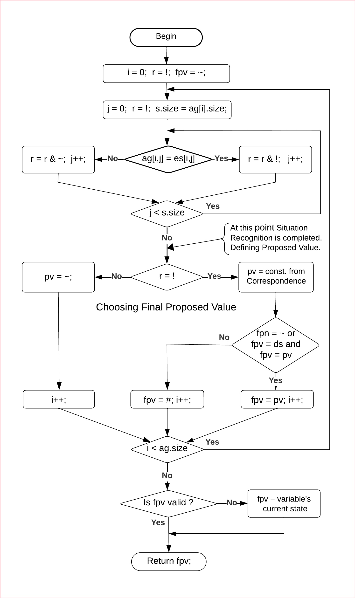
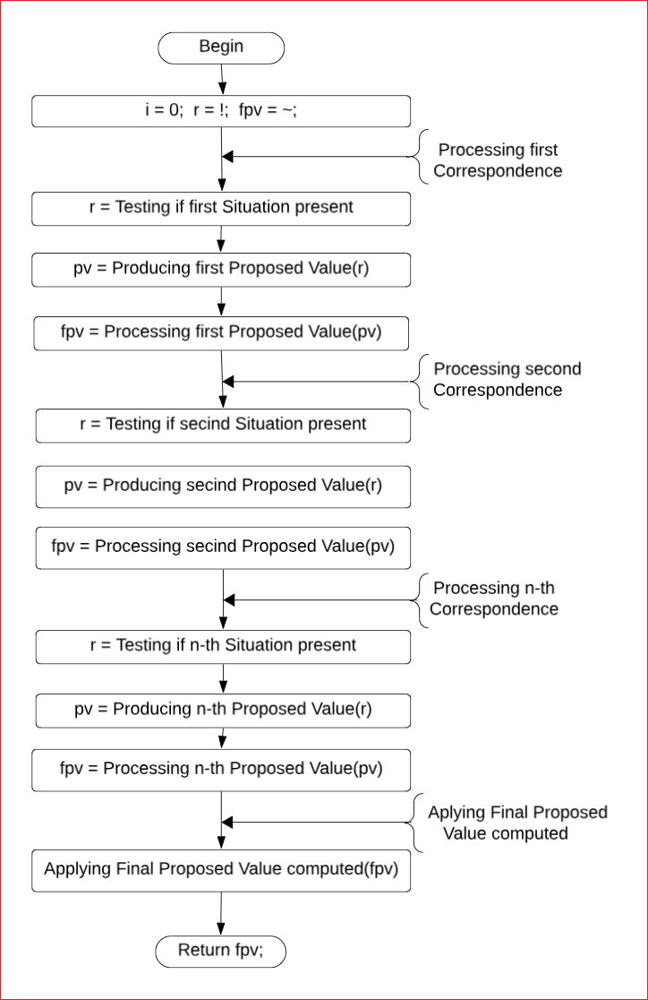

While studying behavior of dynamical systems phenomenologically - that is not by delving into their internal machinery, but instead considering only abstract collections of their properties, changing over time - we, following fundamental principles of mathematical modeling, tend to explain causes of changes of states of properties by existence of certain dependence relations of the states of the properties on changes of states of the same or some other properties; and, optionally, on the effects of external systems or the environment.
Objective of this page is to introduce Qualitative Dynamical Systems Mathematical Modeling Technique, developed as part of the Kaleidoscope Project, and to describe modeling solutions proposed by the Modeling Technique. The purpose of the technique and the solutions is to enable creating qualitative systems simulation models, capable of reproducing behavior of existing or being designed systems, when studying or developing their behavior controlling machinery.
Reproducing Behavior of Qualitative Systems With the Help of Their Models
To reproduce behavior of dynamical systems, or, in the other words to conduct simulation modeling of behavior of these systems, is a process of recreation of changes observed in the state of modeled systems with the help of the simulation models of these systems. And, since by definition of behavior of dynamical systems, all changes of their state are explained by the changes in the state of the systems happened earlier, organization of process of reproducing behavior of the systems presumes creating such models that could be used by the simulation process for generating the same sequences of transitions of states of models from their current state to the next one, as those observed in the modeled systems.
Thus, the process of reproducing behavior of a particular qualitative dynamical system with the help of its simulation model could be performed as the sequence of steps that begin with transformation of the initial state of the model, performed at the initial moment of simulation t=0, into its state observed at the next moment in time, that can be denoted as t=1; then the state at the time t=1 should be transformed into the next state observed at the next moment t=2; and then the process should continue as a systematic repetition of steps of transformations at the moments t=2, 3, 4, 5, etc., as long as this makes practical sense.
Suggested description creates understanding of role of the models in the technique of simulation modeling of behavior of qualitative systems. But it says nothing about how the models of the systems should be defined and how they should perform transformations of current states of the models into their next states. Meanwhile, qualitative dynamical systems are the instances of the class of dynamical systems whose changes of states are described as driven by the dependence relations of states of properties of the systems on the combinations of states of groups of properties. Therefore, a model of a qualitative system should:
(1) be defined as a collection of n variables, referred to as xi, where index i of variable x runs from 0 to n-1; variables represent qualitative properties of the modeled system; and values of the variables are taken from a mathematical set, characteristics of elements of which make it possible to use them for representing states of qualitative properties; while
(2) the mechanism of computation of the states of the variables of the model has to be defined as the system of n equations, written as: xit+1 = f(argst), where: xit+1 is the state of the variable xi at the time t+1; argst stands for the list of arguments of the function f, holding values of groups of variables of the model at time t; and f is the function computing value of variable xit+1, as the dependent element of the dependence relation corresponding to values of independent variables of the relation, passed to the function as its arguments.
So, the modeling technique, intended to enable creation of simulation models of qualitative systems, has been developed as a complex of modeling solutions. Those solution are based on the general principles of mathematical modeling of dynamical systems, on the one hand, and reflect discrete nature of qualitative properties, and the character of behavior of qualitative systems, on the other hand. Theis solutions provide:
(a) definition of domain set, elements of which can be used for representing qualitative values of variables of models;
(b) definition of Qualitative Model Behavior Specification describing all changes in the state of each variable occurring in the response to all situations causing that changes;
(c) definition of content of computation procedure of state functions of variables of models of qualitative systems, that makes it possible to compute values of state variables of the models;
(d) approach enabling creation of models of qualitative systems in the form of algebraic expressions; and
(e) definition of five algebraic operations that can be used for computing algebraic expressions written as the composition of these operations.
All listed, and other, associated with them, solutions, as well as an example of qualitative system model, defined based on the specification of model of a concrete qualitative system, are described in the following sections of this page.
Definition of Domain Set of Mathematical
Models of Qualitative Systems
Creation of mathematical models of dynamical systems in the form of collections of variables assumes having mathematical sets, nature of elements of which makes it possible to use them as the values of variables, denoting states of properties of the modeled systems. Thus, for example, technique of creating models of quantitative systems, utilizes sets of integer, real or complex numbers, elements of which are used to denote magnitude of modeled properties. On the other hand, technique of modeling either logical or discrete systems, propositions of which may take only two states, use sets consisting of only two elements, such as "yes" and "no", or "1" and "0", depending on adopted interpretation.
In contrast, the qualitative systems are neither quantitative nor logical. By assigning to properties of these systems different qualitative assessments of their states, we assume that properties are multivalued and may take different qualitative states at different times. And, thus, the elements of the set which should be used as values of variables, representing qualitative states of properties, will serve as unique markers of different qualities of the properties. Respectively, the markers are not supposed to have any associated with them connotations and interpretations. And, hence, the only relation that can be defined on such a set should be the equivalence relation of each element of the set to itself, and its non-equivalence relation with all other elements of the set.
Such a set can certainly be a set of signs. These signs can be either the letters of alphabet of a language, used for description of the model in the form of text, or the codes of different colors, used when the model and the states of its variables are depicted graphically.
So, the definition of the set of signs, used on this page, is the following:
Mathematical Set of the models of qualitative systems is the collection of uninterpreted uppercase letters of Latin alphabet, and, thus, is defined as: D = {A, B, C, ..., Z}. Being a collection elements which are used for representing values of arguments of function and values of variables computed by the functions, set D serves in the models as the domain and the range of the state functions of variables of the models.
Remark 1. Definition of set of models in the form of the set of colors, which in the context of creating qualitative systems graphical models is called a Palette, is given on the page "Multicolored Logical Net (McLN) Modeling Formalism".
Remark 2. Technique of description of process of computation of next state of variables of the models in the form of mathematical expressions written as a composition of algebraic operations, that requires having a carrier set allowing definition on it operations necessary for computing algebraic expressions, is described later in the sections devoted defining content of the state functions of variables of the models.
Definition of Qualitative Model Behavior
Specification
Whatever the modeled qualitative system may be - whether existing in reality, or (when is designed) present only in our imagination, creating its model, assumes having detailed specification of dependence of states of each variable of the model on the states of various groups of variables characterizing situations that can arise in the model. And since such models are created for reproducing behavior of the modeled systems, the structure and the content of the specification of the model has to be based on observed, or assumed, dependence of states of each property of the system on the occurrence of situations. This dependence is described in the Qualitative System Behavior Specification (QSBSpec), structure of which is proposed on the previous page: Qualitative Systems, Their Behavior and Mathematical Modeling.
Respectively, described in this section Qualitative Model Behavior Specification (QMBSpec) follows structure of the QSBSpec, in the sense that it is also defined as a list of the sub-specifications. However, in this case, those sub-specifications are not specs of dependence of individual properties, but the ones of dependence of individual variables. Meanwhile, unlike the QSBSpec (each element of which describes single Correspondence of proposed state of property to expected situation) - each element of the QMBSpec is defined as the pair: [name of the variable / list of all Correspondences]. In this structure the Correspondences determine dependence of all states of the variable of the pair on all expected situations.
Thus, in order to describe content of the QMBSpec, elements of its list are named: State Variable Dependence Specification (SVDSpec), variables in each SVDSpecs are named xi, and values of the variables are denoted by constants taken from the set D. General form of structure of the QMBSpec is presented in Figure 1.
Figure 1. Structure of Qualitative Model Behavior Specification. In this Figure:
(1) QMBSpec is defined as the list L ni=0 of n SVDSpeci.
(2) Each i-th SVDSpeci{ xi : C cn(i)j=0 { } } is defined as a pair where the first element of the pair xi is the dependent state variable of the SVDSpeci whereas the second element is the list of Correspondences, iterator through which is denoted as C cn(i)j=0 of i,j-th Correspondences.
(3) Each i,j-th Correspondence { cvt+1i,j : S sn(i,j)k=0 { } is also defined as a pair. In that pair first element cvt+1i,j belongs to domain set D. It is a constant value which is supposed to be assigned to variable xi as its proposed value, as the response of the model to emergence of the i,j-th situation S sn(i,j)k=0, described in the second part of the pair.
(4) Each i,j-th situation S sn(i,j)k=0 is also the list, and each i,j,k-th element of the list is the pair described as { xi,j,k : evti,j,k }. The first element of the pair is the variable xi,j,k and the second is the constant evti,j,k belongs to domain set D. Thus both: the variable and the constant are the k-th elements of the list of i,j-th situation of i,j-th Correspondence of i-the valuable dependence specification.
To summarize, obtained after conversion of the QSBSpec to the QMBSpec by replacing unique identifiers used in the QSBSpec, with the names of the variables suggested by the modeling technique, and the identifiers of states of the properties with the elements of the domain set D, chosen to represent states of properties,
Definition of State Functions of Variables of Models of Qualitative Systems
To define a function, in a general sense, means to suggest a way for computing its values for all possible combinations of values of its arguments. Respectively, in order to define state function of a variable of a model of qualitative system (intended for reproducing changes of state of a property observed in a modeled system), it is necessary to define a computation procedure of the function, capable of producing values of the variable for all possible combinations of values of groups of variables of the model, characterizing situations which are described in the Correspondences of the SVDSpec of being computed variable and ought to be passed to the function as its arguments.
However, in order to construct a computation procedure of state function of variable, it is necessary to take into account that the suggested way for its computing must ensure obtaining results despite the challenges caused by the characteristics of dependence of states of variables of models of the qualitative systems on irregularities of the occurrence of situations in those systems.
Content of Computation Procedure of State Functions of Variables
Being, by their nature, the systems of simultaneously acting components which produce asynchronous and fragmentary changes in the state of properties of the systems, both the qualitative systems and their behavior are characterized by the fact that, the all transformations of state of properties of the system into their next state, performed at any particular moment in time, are really caused by not all, but only the part of all the variety of situations that can emerge and be present in a system.
This statement actually means that since concrete content of situations can be formed in the model only immediately before computing each of its functions, and thus that the knowledge on which of the situations, expected by the function, must be passed to it as arguments and which are not, cannot be obtained until its computation begins, absolutely all groups of variables listed in the SVDSpec, must be included in the list of arguments of state function of each variable; so to say just in case. And, thus, because of that, it turns out that, not all, but only those groups of arguments, that at the moment of computation of the functions, characterize expected situations, can be used for computing values of functions (and their variables) corresponding to the expected situations.
Hence, taking into account all that has been said by now, in order to compute the function, its procedure, (that can be also referred as algorithm) have to be enabled for a) systematic scanning the list of all groups of arguments of the function for identifying among them expected situations, b) producing either the real proposed values of the variable taken from the Correspondences of the Specification in cases when either a single, or few expected situation are detected in the arguments, or, alternatively, producing proposed values marked with some auxiliary symbol that is used to denote produced proposed value as undefined; and b) generate final proposed value of the function out of all proposed values, either obtained as corresponding to all existing or not existing situations by analysing their values with the intention to distinguish three possible outcomes identified as cases occurring when:
(1) none of the situations, described in the SVDSpec of the variable, is present in the state of the model, and, therefore, in order to avoid corruption of the state of variable, the final proposed value of the function should be marked with some auxiliary symbol indicating that this value is undefined; or when
(2) there are found one or more situations proposed values of which require the variable to transition to the same state which means that any of these proposed values may be assigned to final proposed value of the function; or when
(3) two or more simultaneously existing situations produce different states which has to be assigned to the computed variable at once, and thus, in order to avoid collision among the proposed state of the computed variable occurring in that case, the final proposed state of the variable should, similar to the case 1, be marked with some other auxiliary symbol, that also does not belong to the set D, indicating conflict of the proposed values.
So, only case 2 produces valid final proposed value and later assigns it to the computed variable, but the final proposed value produced in cases 1 and 3 are invalid. They indicate that next value of the function is undefined and therefore the current value of the variable should remain unchanged. However, a solution, suitable to the cases 1 and 3, which makes any undefined final proposed value of the function to be always defined exists. This solution suggests the function has to always produce the current value of the variable, instead of the final proposed value of the function when the computed final proposed value is undefined. With this approach, the computed variable, that is already in its current state, gets the same current value again, and, thus, leaves the value of the variable effectively unchanged.
First Algorithm of Computation of State Function of Variable
Flowchart of the algorithm visualizing understanding of the content of the function computation procedure, that respects partial dependence of values of variables on the occurrence of situations, but converts this partial dependence into the algorithm of fully defined function, is presented in Figure 2.

Figure 2. Flowchart of the algorithm implementing content of
computation procedure of
a state function of variable described
in the previous section.
As it is shown in the Figure 2, the algorithm takes four arguments. Its first argument is a list of groups of variables of the model, passed into the function at the moment of its computation. The second and third arguments are taken directly from the Correspondences of the specification. They are passed to the function as a list of groups of constant, describing expected situations which may be formed as combinations of values of groups of variables passed to the function as its first argument; and as a list of constants denoting proposed values corresponding to the expected situations. The fourth argument is the current value of the variable being computed. It is used as the spare value of the function in case when its computed value turns out to be undefined.
This algorithm organizes the evaluation of a function in the form of a cycle through all groups of the first argument of the function, performed with the purpose: 1) to identify all situations expected by the function that may be present, at the time of evaluation of the function, in the list of groups of its first argument; 2) to determine the proposed value of the variable for each group of variables as corresponding to the identified situation or to mark it as undefined using the auxiliary symbol $ for this purpose; 3) to analyze the state of each proposed value, which may turn out to be either defined or not, and to determine the final proposed value of the function, which thus may also turn out to be undefined due to the fact that either none of the expected in the list of groups of the first argument situations was detected, or two or more expected situations were detected, but it turned out that their proposed values are different and therefore, during the analysis, the final proposed value was marked with the symbol #.
And since the cycle can be completed with cases where the final proposed value of the function may be either computed or undefined, the last operation of the algorithm, performed after the end of the cycle, uses as the computed value of the function (and its state variable) the final proposed value when it contains a symbol belonging to the set D, which means it is computed, or replaces it with the current state of the variable passed to the function as its fourth argument when the final proposed value is undefined.
A note. Described algorithm is called "First" in this section because it is the first attempt at a formal description of the procedure for calculating the state function of the model variables. This makes it possible to evaluate its content from the point of view of the operations necessary to calculate the function. Therefore, the analysis of this algorithm continues in the sections of this page following the current one.
Proposal of Streamlining First Algorithm of Computation
of State Function of Variable
Perhaps, the first thing that anyone, involved in the software development, could say, about what is present in Figure 2, is that this is just a flowchart of a typical algorithm of a computer program. And it would be really difficult to argue with that perception. Indeed, the multitude of rhombuses scattered around that check the estimates of the state of data and select, depending on the values of these estimates, different directions of development of the computational process, greatly distinguish this algorithm from algorithms of sequential computations of algebraic expressions.
Meanwhile, we know that the result of the computational algorithm can be often obtained not only by means of checking many conditions and changing the order of execution of operations. Very often when creating algorithms that use sub-algorithms, we place all the logic of data analysis in those sub-algorithms, leaving to the main algorithm only the task of controlling invocations of the sub-algorithms in the computation process.
Imagine for a second, that implementation of the algorithm of computation of function, presented in Figure 2, is rearranged in such a way that all those "if-s" and "then-s", cluttering process of computation which are usually depicted on the flowcharts in the form of diamonds, located outside the data processing rectangles, would be suddenly relocated inside the rectangles and become a part of operations that compute the data. That would make the flow of execution of the operations of computation of the functions to be entirely laminar and thus providing the ability to implement the algorithm in the form of a classical algebraic expression.
Example of such a streamlined algorithm of computation of state function of variable, obtained as result of rearrangement of the First Algorithm, depicted in Figure 2, is presented in Figure 3.
Figure 3. Flowchart of Streamlined First Algorithm obtained after all the decision operations have been moved from outside to inside data processing operations.
So what should be practically done to turn the vision of such an imaginary algorithm into an existing reality? The answer to this question is actually quite simple. And it is based on the following obvious chain of observations (1), (2), and (3).
(1) Since both local variables: "proposed state of variable" and "final proposed state of variable", used in the algorithm, are qualitative and hence, according to the definition made above, elements of the set D must be used to represent their computed values, and also since in order to represent different undefined values of both variables must be used different special signs, then for compatibility by type, all special signs must be compatible with the elements of the set D, and therefore the entire variety of auxiliary signs should be defined as a set of auxiliary symbols X = { #, $, ! }.
(2) Emerging as a result of observation (1), homogeneity of elements of the set D with elements of the set X, existing due to the necessity to use both: elements of the set D and elements of the set X as values of the qualitative variables of the algorithm, creates unique opportunity to consider idea of defining unified carrier set S of the model as the union of the set of values of variables D and the set of auxiliary symbols X, on the one hand; and to define on the set a family of hybrid operations capable of taking operands and producing the result of applying the operation to operands that can be elements of the set S, on the other hand.
(3) If when striving to define a procedure for computation of a function in the form of an algebraic expression, we, for achieving this goal, would make a decision to follow the idea of moving all state testing operations of the computation process and its data to a lower level of the hierarchy of algorithm, i.e. on the level of data processing operations used in the process of computing algebraic expressions, then this would mean that, in accordance with the emerging homogeneity of the elements of the set D with the elements of the sets X described in observation (2) would be that practical solution that makes it possible to use he set S and the operations for implementing the functions computation algorithm in the form of algebraic expressions implemented as a composition of operations defined on the set S.
So, research on the feasibility of defining on the set S operations capable of performing required computation was conducted. And its result made it possible to construct five hybrid operations, letting to implement the procedure of computation of state functions of variables of models of qualitative systems in the form of the algebraic expression written as a composition of these operations. The names, denoting symbols and comments on the roles of the operations in the process of computation of the expression are listed in Table 1.
| Name | Sign | Meaning |
|---|---|---|
| Equivalence | ? | Compares operands; yields "!" when operands are equal, or "~" when they are not. |
| Conjunction | & | Works as a boolean AND operation for symbols "!" and "~". It is used to compute n-ary Conjunction. |
| Production | * | Produces proposed values for all identified or not identified expected situations. |
| Disjunction | | | Analyses all proposed values, chooses final value. It is used to compute n-ary Disjunction. |
| Application | < | Checks if final value is element of set D, and returns it; otherwise returns current value of the variable. |
The table lists all five operations in the order they are used in the expression. Names of the operations are presented in the first column of the table. The second column contains symbols used to denote the operations in an expression where the operations are written in their infix form. And the third column provides a brief description of the operations. Detailed descriptions of the operations presented in the table are listed below.
Equivalence (?) operation is the first that begins computation of the procedure of a function. It is used to recognize situations, description of which is passed to a function as the groups of its arguments. When recognizing a particular situation, this operation compares all the values of a group of the arguments, which may or may not contain the description of the expected situation present in the model at the time of computation of the function, with their expected values. To perform this comparison, the operation takes two operands whose values are symbols of the set D and yields either symbol "!", which belongs to the set X, if both operands are represented by the same symbol of set D, or the value "~", which also belongs to the set X, if the operands are represented by different symbols of the set D.
Conjunction (&) operation is also used to recognize situations, or more precisely to compute the indicators representing the fact that all the results of comparing the states of properties with their expected values obtained as a result of applying the Equivalence operation have been compared and thus the expected situation is recognized. It is called Conjunction because it inherits its role from the Conjunction operation defined on a set consisting of only two elements and solves the same problem. This operation takes two operands computed by the Equivalence operation by comparing its operands, each of which can be either the "!" symbol or the "~" symbol, and returns the "!" symbol only in case - when both of its operands contain the "!" symbol, or the "~" symbol for all other combinations of operands. Properties of the commutativity and associativity of the Conjunction operation allow it to be used for computing n-ary conjunction of all results of the Equivalence operation, where the output of n-ary conjunction is the value "!" if and only if all results of the Equivalence operation are represented by the symbol "!", or the symbol "~" otherwise.
Production (*) operation is the generator of the proposed state of the variable. It has gotten its name because it acts in the same way as the production rule. One of the operands of this operation is the result of recognition of the situation, i.e. it may contain either symbol "!" or "~" obtained after computation of the n-ary conjunction accomplished by the Conjunction operation. While the second argument is the element of the set D, that is described in the Correspondence of the specification as the proposed value of the variable. The operation produces a proposed value of the variable that is a dependent element of the relation computed by the function in case when the operand, representing the result of recognition of situation "!" indicates that the situation is recognized, or the symbol "~" when the result of recognition is the symbol "~" meaning that the situation is not recognized.
Disjunction (|) operation is called Disjunction because in the process of computation of the function it plays a role similar to the role of the Disjunction operation of an algebra defined on a set of two elements. Its task is to look through all the proposed values and do the best to find a single "final proposed value" which should become the value of the function, and thus the next value of the state variable of the model. So, to accomplish the task this operation takes two operands that can be represented by any symbols of the set S. And it is commutative and associative, similar to the Conjunction operation, it is used to compute the n-ary disjunction of all the results of the Production operation. In the process of this computation, it selects from all the proposed values produced by the Production operation a single final proposed value that should become the value of the function (and the next value of the state variable of a model) if such a value can be found among all the proposed values produced as corresponding to all situations, regardless of whether the situation is recognized or not. There are three possible outcomes of the application of this operation produced as a final proposed value. Based on the following three rules.
1) It yields symbol "~" when it turns out that none of the expected situations that are independent elements in relation to the dependence of the variable on the situation were recognized since none of them are present in the state of the function arguments;
2) It yields a symbol "d" that is an element of the set D, produced by the Production operation, as corresponding to the recognized situations in the case when one or more expected situations turned out to be present in the state of the arguments of a function and all recognized situations (when there are several of them) have produced the same proposed value of the variable.
3) Or, it yields the symbol "#" denoting the case when at least two of the expected situations are present in the model (and the arguments of a function) and are recognized, but corresponding to the situations proposed values require the computed variable to simultaneously take different values. And since the function, by definition, can compute only one value, it is interpreted by the next operation as the fact that the final proposed value that this operation should produce could not be found among the previously computed proposed values. And.
Application (<) operation is the last one in the procedure of computation of a function. Yet, its role has nothing to do with the continuation of computation of the function. It is used to redefine the function by transforming it from partially defined to defined on all possible combinations of its arguments (whether they represent or not represent situations) and, thus, for eliminating cases when, due to a conflict of values detected by the Disjunction operation, the final value turned out to be undefined; that is, to transform a partially defined function into a complete one. In solving this problem, the Application operation, like all previous operations, also takes two operands. But unlike all previous operations, it is not commutative. Its first operand is the final proposed value (computed or not by the Disjunction operation), and the second is an additional argument of the function containing the current value of the variable, in case the computation of the next value of the variable may not work. Thus, all this operation does is check the type of the final proposed value of the function passed to it as its first operand and determine the computed value of the function using the final proposed value if that value is represented by an element of the set D, i.e., is a real symbol representing the next state of the variable. Or, alternatively, use the value of the additional argument of the function which is the current value of the function which should replace the unevaluated final proposed value.
General Form of Expression of State Equation of a Model
as the Expanded Disjunctive Normal Form (X-DNF)
The general form of a state equation of a variable whose right-hand side is defined as an algebraic expression defined as a composition of hybrid operations defined on the model set S can be written as the formula.

Being a general form of the expression, this formula states that: (a) The value of the variable xi at time t+1 is computed as an expression of the Algebra of Symbols defined as a composition of five operations defined on the set S.
(b) Following the requirement to keep values of variable x to be denoted by only elements of domain set D and the QVDSpec the structure of the expression. written from left to right, (which is opposite to the order of execution of operations) begins with the sign "<" that indicates Application operation task of which is to protect value of the variable in case when its next value is not defined,
(c) The structure of the formula placed in curly braces is determined by the specification. The part of expression in it, written as Disjunction from c = 0 to cn(i) of elements written in the square brackets is the cn(i)-ary disjunction, where cn(i) is the number of Correspondence computing proposed values of the variable xi and part in the square brackets is the general form of the sub-expression computing proposed values pv(i, c), where pv(i, c) stands for element of set S that should be used as the proposed value generated by the c-th Correspondence of the i-th variable, that should be used as one of the operands of operation Production, denoted by symbol "*".
(d) The part located on the right side of the Production operation, written as Conjunction from s = 0 to sn(i) is the sn(i)-ary conjunction of the results of Equivalence (?) operation. Here sn(i) is the number of pairs: argument[i,c,k]/ev[i,c,k] which characterize i,c-th situation.
(e) The parts of the pair: argument[i,c,k] is the i,c,k-th argument of the expression and the ev[i,c,k] is the i,c,k-th element of set S used to represent expected value of the i,c,k-th argument of the expression. These pairs: argument[i,c,k]/ev[i,c,k] serve as the operands of the Equivalence operation.
Illustrative Example of Specification, State Equation and Process of Computation of the State Variable of the Equation
This section presents process of creating model of a qualitative dynamical system as a sequence of steps: creating description of behavior of a modeled system in the form of QSBSpec, creating model of qualitative system based on QSBSpec. Then it demonstrates, process of using created state function of the variable on the example of four experiments of computation of value of the state variable of the model for different initial states of the variable and arguments of the function computing different states of the variable for different arguments.
Example of the QSBSpec having Single QVDSpecs
x0 : [K : {(x1 : A), (x2 : B)}]; [L : {(x3 : M)}]; [H : {(x4 : E), (x5 : D), (x6 : N)}]
Presented example describes dependence of a single variable x0 whose values depend on three Correspondences. The first Correspondence [K : {(x1 : A), (x2 : B)}] states that variable x0 should take value K, when the values of the variables x1 and x2 hold expected values A and B. The second Correspondence [L : {(x3 : M)}] states that variable x0 should take value L, when the value of variable x3 holds expected values M. And the third Correspondence [H : {(x4 : E), (x5 : D), (x6 : N)}] states that variable x0 should take value H, when the values of the variables x4, x5 and x6 take expected values E, D and N.
This example will be used later to illustrate the process of computation of the state equation of the variable x0 whose expression is defined on the basis of the specification presented in this section.
Example of the X-DNF expression
Presented example of an equation defined in accordance with above formula describing dependence of values of a variable "x0" on the combinations of values of variables x1, x2 and x3 which characterize two situations (x1), and (x2, x3) that may arise in a particular system, is presented as equation.
x0 = x0 < [ ( P * (x1 ? E) ) | ( H * ( (x2 ? M) & (x3 ? Q) ) ) ]; (1)
This simple equation states that the two values which variable x0 can take are determined by two situations and hence two correspondences. The first (left to right) Correspondences describes that variable x0 should take value P when value of variable x1 is E, whereas the second Correspondence describes that variable x0 should take value H when value of variable x2 is M, while the value of variable x3 is simultaneously marked by symbol Q. In spite of such simple dependence, different combinations of values of independent variables (arguments) of the expression: x1, x2 and x3 may cause the expression can be computed with different results and thus would create at least three different values of the variable x0. All these cases are considered and illustrated in the next section, which describes every single step of the computation of the expression in all the details.
Computation of the State Variable of the Equation
Proposed in previous sections, solutions for modeling qualitative dependencies, based on the hybrid set S, make it possible to describe dependence of changes of values of a qualitative variable on various emerging and disappearing situations. An example, presented in (1), represents such dependence in the form of algebraic equation, utilizes elements of the set S for denoting values of variables, and computes the algebraic expression, located in the right part of the equation, as the composition of operations defined on the set S. Now, the content of this section is intended to illustrate application of the elements and the operations of the set S in the process of computation of the expression of the equation (1). The content of the proposed example is presented in Figure 4 which has four sections: a, b, c and d.
All four sections of the example illustrate the process of computation of a certain value of the dependent variable x0, of the same equation (1), depending on a particular combination of values of the variables: x1, x2 and x3, which are the arguments of the expression being computed. Therefore, in order to show how the expression obtains different results, each of the four sections begins with the initialization of the computed value x0 with always the same value G, but with each time different values of the variables: x1, x2 and x3.
Six lines, in each section, following the line of initialization, depict the results of successive application of five operations: ?, &, *, | and <, causing the change in the state of the process of computation of the expression. These changes are expressed in the diagram as a replacement in each following line, presenting the result of the operation, of that part of the line which holds the construct: "operand-operation-operand" representing executed operation by the value produced by this operation. The arrows located between the lines in section "a", directed vertically downwards from the sign of the operation to the symbol depicting the result of the application of the operation, serve for drawing attention to the operation performed. They are used at each of the computation steps in section "a" only, but not placed in the remaining three sections since all these sections depict the same execution process while the difference in the content of computation is determined by different values assigned to the arguments of the expression at time of their initialization. Here below is Figure 4a followed by the detailed description of steps of execution of the operations.
Description of Steps of Computation of Section "a"
And Roles of the Operations in the Steps

Figure 4a provides a detailed description of the steps of computation of the expression. It illustrates the case when the arguments of the expression are initialized as x0 = G; x1 = L; x2 = M; x3 = Q; and thus the situation (x1) is not present and is not recognized, but the situation (x2, x3) is present and recognized. Therefore, the produced proposed value "H" of the variable x0 is computed as the correspondence to the situation (x2, x3). So, the operations Disjunction and Application choose and accept it as the valid value of the variable x0. Further description of the process of computation of values of the variable x0 of this case proceeds as the detailed description of five steps of execution of five operations ?, &, *, |, < constituting the expression.
Step 1 is performed as the execution of the Equivalence (?) operation which is applied to the situation (x1), presented as a group of variables consisting of only one variable x1, and to the situation (x2, x3), presented as a group consisting of two variables x2 and x3. So, as it follows from the structure of the expression, the task of this operation is to test if the current value of each variable is the same as its expected one. In Figure 4a, the application of this operation is depicted as three arrows directed vertically from the sign of the Equivalence operation "?" to the symbol yielded as the result depending on the operands of the operation. Thus, as the value of the variable x1 is "L" and its expected value is "E" the application of the Equivalence operation to these operands yields the symbol of "$" - indicating that the value "L" of operand x1 and constant "E" are not the same. Yet, at the same time, the value "M" of variable x2 is the same as the constant "M" and the value "Q" of the variable x3 is the same as the constant "N". Hence, application of the Equivalence operation to both pairs of the second situation yields the auxiliary symbol "!".
Step 2 is performed by the Conjunction (&) operation. The task of this operation is to compute the conjunction of all results of the Equivalence operation and thus show that all the current values of the independent variables characterizing the situation have been compared with the expected ones and therefore the expected situation is present in the state of the model and thus is considered as recognized. So, this operation is used to conduct the test for the results of the Equivalence operations yielded for each situation. So, to confirm the recognition, the operands of the Conjunction operation may be different combinations of symbols "!" and "$" therefore the role of the operation is, in respect to the values of operands, is absolutely the same as the behavior of the well known boolean Conjunction operating with the values named "true" and "false". The application of this operation, in the considered case, is depicted as one arrow directed from the sign "&" of this operation to the symbol yielded as its result; in this case it is symbol "!".
Step 3 is performed by the Product (*) operation. The output of this operation is a proposed value that is produced as the correspondence to recognized or not recognized situation. Depending on the result of the recognition of situation performed by the Equivalence and Conjunction operations, the proposed value produced by the Production operation may be presented as either the constant corresponding to the recognized situation described in the Correspondence sub-expression and located as the operand of the Production operand placed on the left side of the operation, or as the symbol "$" already used to indicate the fact that the situation was not recognized. On the Figure 4a, application of the Production operation is depicted as one arrow directed from the sign "*" to the domain symbol "H" yielded as result of the application of the operation to its operands, given as symbols of "H" and "!".
Step 4 is performed by the Disjunction (|) operation. The execution of this step begins when all proposed values of a variable are already determined by the three previous steps, and consists in choosing the final proposed value out of all produced proposed values. So, to accomplish that choice the Disjunction operation analyzes all the proposed values one by one and selects from them the only final value of the computation process that serves as a candidate to become the next value of the variable. Therefore, as it is defined by the mechanism of this operation, its result can be yielded as either a) an auxiliary symbol "$", indicating the fact that none of the expected situations is recognized, b) an element of the set D, when one or more situations are recognized and all produced as the correspondence to recognized situations proposed values are represented by the same element of the set D, or c) an auxiliary symbol "#", indicating the fact that two or more of the recognized situations produced proposed values represented by the different elements of the set D, and thus created the conflict in choosing the single final value of computation. In Figure 4a the Disjunction operation takes operands given as symbols "$" and "H" and therefore chooses of them as the final proposed values symbol "H";
Step 5 is performed by the Application (<) operation. This operation is the guard of the computed value of the variable of the equation. It takes two operands: the current value of the variable and the final proposed value - produced by the Disjunction operation, which can be either the element of the set D or the one of the symbols of the set X. Following its role of guarding, this operation is to prevent any symbol, other than those that represent the valid next value of the variable, from becoming the result of the computation of the expression. So, the operation checks if the final proposed value, given to it as the operand is a symbol of set D and if it is then yields the final proposed value, or otherwise (when the final proposed value is a symbol belonging to set X indicating that the next value of the variable is not computed) yields the first operand representing the variable's current value, that leads to the value of the variable in fact will be left unmodified. In the Figure 4a the yielded by the Disjunction operation result is represented by symbols "H", therefore next computed value of the variable is computed as the symbol "H"
Execution of step 5 completes the description of computation of the expression, presented in Figure 4a.
Description of Computation of Sections "b", "c", And "d"
The computation of the rest of the sections of b), c), and d) of Figure 4 follows the same schema as the computation of presented in Figure 4a, and is different only in the way of initialization of the variables: x1, x2, x3, that make the expression, in spite of the same order of the application of the operations, to compute the expression differently. That is, in fact, based on the internal analysis, conducted by the operations that make them to produce different values of the variables corresponding to different situations presented by arguments of the expression, initialized differently. These differences in the computation of the rest of the section is described as follows.

Figure 4b illustrates case when arguments of the expression are set as x0 = G; x1 = E; x2 = M; x3 = Q; This makes both: the situation (x1) and the situation (x2, x3) are recognized, and, as the consequence of that, the produced proposed values "P" and "H" create uncertainty in choosing the final value of the variable x0 accomplished by the Disjunction operation that in that case marks the final proposed values by symbol "#" to indicate that the final value is not determined. Hence, the Application operation should leave the current value "G" of the variable x0 unchanged.

Figure 4c illustrates case opposite to the case 1a. Here the arguments of the expression are set as x0 = G; x1 = E; x2 = U; x3 = Q; and this leads to the situation (x1) is recognized, but the situation (x2, x3) is not recognized. Hence, the only produced proposed values "P" of the variable x0 which belongs to the domain set D is computed as the correspondence to the only existing situation (x1).

Figure 4d illustrates case opposite to the case 1b. In this case the arguments of the expression are set as x0 = G; x1 = R; x2 = M; x3 = Z; This makes that none of the expected situations is present and, hence, none of the expected situations is recognized. And so, as a consequence of that, both proposed values of the variable are marked with the symbol "$". And therefore, similar to the case 1b, the Application operation leaves the value of the variable x0 in its current value "G".
Conclusion
And as it often happens, obtaining an answer to one question may immediately pave the road to the emergence of the next one, a more general question. So, obtaining the answers to two questions, asked at the beginning of this page, immediately sparks interest in getting the answer to the new question: How should the models of the qualitative systems be organized. All the remaining pages of the description of the project are devoted to answering this question. And the description of this starts right on the next page providing the more formal definition to described on this page set S and its five operations as the algebra, named "The Algebra of Symbols" and continues as presentations of other modeling solution proposing representation of the system of qualitative equations of the model based on the Vector State Space approach and the Graph Based Multi Colored Logical Net (McLN) modeling formalism, creation of which is supported by the application named Qualitative Systems Modeling and Simulating Environment.